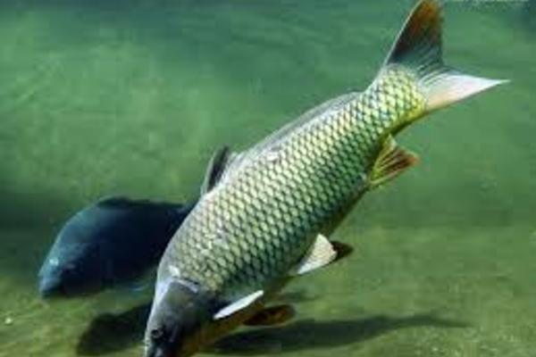
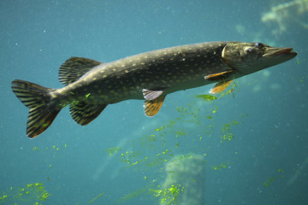
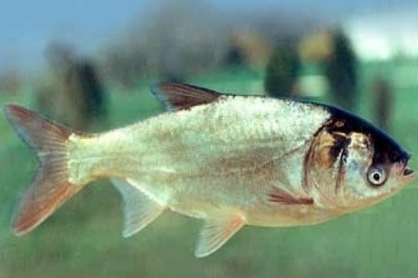

Озеро на дачі
Розведенням риби, як правило, займаються великі рибні господарства. Але мало хто знає, що рибу можна розводити навіть у маленькому озері, влаштованому в звичайному дворі заміського будинку або на дачі. І виявляється, що в облаштуванні такої міні-рибоферми немає нічого складного або незвичайного. Можна викопати свій домашній ставок. Спочатку вам потрібно вирішити, де ви збираєтеся рити ставок. Вибір місця в саду за принципом “пальцем у небо” - далеко не найкращий варіант. До цього слід підійти грунтовно. Пам'ятайте, що дачне озерце буде постійною частиною цілісного пейзажу вашого саду, тому проявіть далекоглядність. Спочатку потрібно вирити котлован (найкраще поблизу річки, а потім збоку “завести” воду) та визначитися з розміром водойми, яку ви плануєте створити. Вона може бути прямокутною, квадратною або будь-якої іншої форми. Переконайтеся в тому, що котлован був виритий досить глибоко, щоб водоймище не замерзало взимку. Пам'ятайте, що ваш ставок не повинен бути надто малим. Це найпоширеніша помилка, яку допускають новачки цієї справи. Річ у тім, що в кінцевому результаті водойма буде завжди трохи меншою, ніж ви її планували.
Фотогалерея
- 
- 
- 
Розрахунок для початківця
Обьем озера:
Рекомендована кількість риби: